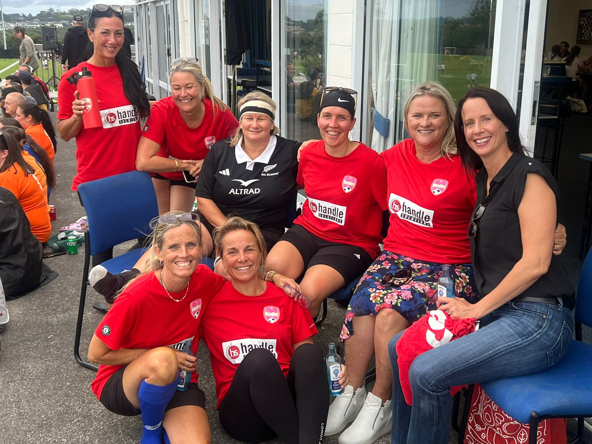

Perimenopause Starts Earlier Than You Think — And NZ Women Are Being Missed
⏱ 8 min
Three doctors. All women. Not one said the word. What I learned after I worked it out myself.
Read on VelaOra →Real, science-backed guidance for the seasons of a woman's life that arrive without a map — perimenopause, menopause, fertility, anxiety, and separation. From women who have been there.
No spam. No fluff. Real information for the journeys nobody prepared you for.
Five pillars of women's health — all in one place, all NZ and Australia focused.

Symptoms, science, and how to advocate for yourself with your GP.
Explore
HRT, supplements, nutrition and thriving through and beyond menopause.
Explore
Navigating fertility decisions, IVF, and the emotional landscape of trying over 40.
Explore
Hormonal, situational and clinical anxiety — understanding and managing all of it.
Explore
Protection orders, family law, financial separation and finding yourself on the other side.
Explore
It can start a decade before your periods stop — and look nothing like you expected.

In New Zealand, the average age of menopause is 51–52. But perimenopause — the hormonal shift leading up to it — can begin in your mid-to-late forties, or earlier. The erratic shifts in oestrogen and progesterone that cause every symptom you're about to read about begin years before your periods stop.
A national survey found that 89% of NZ women aged 40–60 have experienced new or worsening symptoms associated with menopause — yet women are routinely leaving GP appointments with antidepressants, eye drops, and stress management suggestions, their hormones unexamined.
A normal blood test does not rule out perimenopause. Your symptoms are data. Trust them.
— Sarah, VelaOraHot flushes are expected. These are not:
Track your symptoms with dates before your GP appointment. Use the word "perimenopause" explicitly. Know that a normal FSH test doesn't close the case — oestrogen fluctuates daily in perimenopause, so one blood test is one data point. If your GP dismisses you, you are entitled to seek another opinion.
Read the Full Article →What you eat has a direct impact on hormonal balance, inflammation, sleep quality, and bone health during perimenopause. These are the foundations:

Menopause is not an ending. For many women, it is the beginning of the most powerful chapter of their lives.

Menopause is defined as 12 consecutive months without a period. It's a hormonal milestone, not a diagnosis — yet millions of women reach it undertreated, underinformed, and unnecessarily suffering.
The old fear of HRT — driven by a 2002 study that has since been substantially reinterpreted — left a generation of women without treatment they were entitled to. The current evidence, led by specialists like Dr Louise Newson and reflected in the Australian Senate Inquiry into Menopause, tells a different story.
Body-identical oestrogen patches (transdermal oestrogen) are considered the gold standard — they bypass the liver and carry significantly different risk profiles to older oral HRT. Progesterone, testosterone, and topical oestrogen for vaginal health are all part of the modern menopause toolkit that NZ women deserve access to and information about.
Testosterone therapy for women — low libido, energy, cognitive function — is prescribed routinely in the UK and increasingly in Australia. In NZ, many GPs will not prescribe it simply because they haven't been trained in it. This is not a safety issue. It is a knowledge gap. You are entitled to ask, and to seek a specialist if your GP won't discuss it.
Read Our Menopause Articles →Post-menopause brings specific nutritional priorities. Bone density, cardiovascular health, and cognitive function all benefit from targeted nutritional support.

Navigating fertility over 40 requires real information, not platitudes. We provide both with compassion.

The birth rate among women aged 40–49 has been rising steadily for a decade. The majority of these pregnancies involve fertility treatment — IVF, IUI, donor eggs, or embryo transfer. Yet the information available to women navigating these decisions is often either clinically cold or unrealistically optimistic.
VelaOra occupies the space between. We bring science-literate, compassion-first guidance that helps you ask the right questions, understand your options, and make decisions that are right for your body, your circumstances, and your life.
What is the live birth rate per cycle for my age group at this clinic? What does my AMH level mean in practical terms? What are the cumulative success rates over multiple cycles? What is your policy on elective single embryo transfer? What support is available if treatment is unsuccessful?
The fertility journey at any age is emotionally demanding. Over 40, it carries additional weight — decisions made against a ticking clock, grief if treatment fails, the complexity of donor conception, and a medical system that sometimes communicates statistics in ways that feel crushing rather than helpful. You deserve clear information and genuine human support. Both matter equally.
The decision to pursue pregnancy over 40 belongs entirely to the woman making it. Our job is to give you the best possible information to make that decision with confidence.
— VelaOraEgg quality is the central factor in fertility over 40. Nutritional support is not a substitute for medical treatment, but the evidence for targeted supplementation is meaningful.
Fertility supplementation should be discussed with your fertility specialist or GP before starting, as dosing and timing matter. VelaOra earns a small commission on iHerb purchases at no extra cost to you. Always confirm suitability with your medical team.

Understanding whether it's hormonal, situational, or clinical — and what genuinely helps.

Anxiety that arrives in the perimenopausal years often has a different quality to the anxiety most women recognise from earlier life. It may arrive overnight, without a clear trigger, and feel biochemical rather than psychological — because it often is.
Oestrogen modulates serotonin, GABA, and the stress response system. As it fluctuates and declines, the nervous system becomes more reactive. This is not a mental health crisis. It is a hormonal shift — and it responds to hormonal treatment, lifestyle intervention, and targeted nutritional support.
Hormonal anxiety tends to be cyclical (worse around ovulation or before a period in perimenopause), arrives alongside other perimenopause symptoms, and often responds meaningfully to HRT. Clinical anxiety persists independent of hormonal cycle, often has a longer history, and may require psychological support alongside any hormonal treatment.
Many women need both — and there is no shame in that. The goal is accurate identification so the right support can be offered.
Magnesium glycinate before bed has meaningful evidence for anxiety reduction. Addressing sleep disruption is the single highest-impact intervention — much anxiety in perimenopausal women is significantly worsened by chronic sleep deprivation. Exercise (specifically resistance training, supported by Stacy Sims' research) has robust evidence for anxiety regulation in midlife women. And for many women, addressing the underlying hormonal driver with HRT produces the most substantial and rapid relief.
The gut-brain axis is real — what you eat directly influences your anxiety levels through neurotransmitter production, inflammation regulation, and blood sugar stability.
Chosen for evidence quality and formulation. VelaOra earns a small commission on iHerb purchases at no extra cost to you. Supplements support the foundation — but if anxiety is significantly impacting your life, please speak with your GP or a counsellor.

Practical guidance, legal navigation, and real human support for the hardest chapters women face.

In New Zealand, the gap between Women's Refuge (crisis support) and a $400/hour family lawyer is wide — and women in separation often fall into it, without access to clear information about their rights, the legal process, or how to protect themselves and their children.
VelaOra exists in that gap. We provide navigation — plain-English explanations of the NZ family law process, protection orders, parenting agreements, financial separation, and how to find support — without replacing the qualified legal advice you will ultimately need.
A protection order is a civil court order that prohibits someone from being violent, threatening, or intimidating toward you or your children. You can apply with or without the other party being present (a "without notice" application). Applications are made through the Family Court. Legal aid is available for qualifying applicants. Women's Refuge can support you through the process at no cost.
Family violence is recognised under New Zealand law in many forms — not all of them visible. Understanding what constitutes family violence is often the first step in being able to name and address what is happening.
All of these are recognised under the Family Violence Act 2018 in New Zealand. You do not need to have experienced physical violence to be experiencing family violence, and you do not need to meet a threshold of severity to seek help or take legal steps to protect yourself.
Advocating for yourself through a legal system is exhausting when you're already struggling. You don't have to navigate it alone and you don't have to understand it all at once.
— VelaOraIf you would like to reach out to VelaOra for guidance navigating separation, family violence, or the legal and emotional journey of ending a relationship — we are here.
Chronic stress depletes specific nutrients rapidly — and a body under sustained emotional strain needs targeted nutritional support, not restriction.
Nutritional support doesn't fix hard circumstances — but it helps your body cope with them. VelaOra earns a small commission on iHerb purchases at no extra cost to you. If you're in crisis, please reach out to Women's Refuge NZ at womensrefuge.org.nz — they are free and confidential.
Science-backed articles written by women who have been there — published here first. Also available on Substack and Medium.
Three doctors. All women. Not one said the word. What I learned after I worked it out myself.
Read on VelaOra →
Oestrogen helps your cells hold magnesium. As it drops, so does magnesium — right when you need it most.
Read on VelaOra →
The oxidation problem, TG vs EE form, and why Nordic Naturals Ultimate Omega sets the benchmark.
Read on VelaOra →
Great sun safety culture, unexpected consequence. NZ women's vitamin D levels are consistently below optimal.
Read on VelaOra →
You lost a word mid-sentence. You forgot why you walked in. Please read this first.
Read on VelaOra →
Stacy Sims calls it number one. Steven Bartlett devoted two episodes to it. The 2025 science is extraordinary.
Read on VelaOra →
The most researched cognitive health ingredients on the planet grow right here. Most NZ women have never heard of them.
Read on VelaOra →
What you can learn about your cycle, fertility and perimenopause from a ring on your finger while you sleep.
Read on VelaOra →
Our soil grows the most nutrient-dense produce on earth. But most of us still aren't getting enough.
Read on VelaOra →
Four years of reading the actual science. The honest, evidence-ranked guide to supplements that matter.
Read on VelaOra →
Collagen, pea, whey — the options are overwhelming. Most taste terrible. The complete honest guide.
Read on VelaOra →
What happens when women stop watching from the sidelines and start living. A North Shore story every NZ woman needs to read.
Read on VelaOra →
What to say, what to track, what to ask, and what to do when you're dismissed. The NZ woman's complete guide.
Get Free Guide →
I thought I was falling apart. I was in my mid-forties, I work in women's health, I have spent decades reading scientific literature — and I had absolutely no idea that my itchy ears, my chronically dry eyes, my sudden 3am wake-ups and the anxiety that arrived out of nowhere were all connected. Connected to one word nobody said to me: perimenopause.
Three separate doctors. All women. All of them treated each symptom in isolation — a referral to an ophthalmologist for the dry eyes, something topical for the itchy ears, a gentle suggestion that perhaps I was a bit stressed. I sat in one appointment and said outright: "I feel like I'm falling apart. Something is not right." And still, not one of them mentioned the M word.
It wasn't until I visited the UK about four years ago — catching up with a group of friends my age — that it all clicked. They were talking openly and unashamedly about their patches, their testosterone doses, their menopause specialists. And I sat there thinking: we are not having this conversation in New Zealand. I say this as someone who works directly with the very hormone patches we were discussing. I still hadn't put it together for myself.
I thought I was too young and that hot flushes were the thing to look for. Turns out there are hundreds of symptoms — and we are not all alike.
In New Zealand, the average age of menopause is around 51 to 52 years. But perimenopause — the hormonal shift leading up to that point — can begin a full decade earlier. For most women, it starts somewhere in the mid-to-late forties. The hormonal fluctuation that drives every symptom you're about to read about begins not with the cessation of periods, but with the gradual, erratic shifts in oestrogen and progesterone that precede it by years.
A national survey found that 89% of New Zealand women aged 40 to 60 have experienced new or worsening symptoms associated with menopause. And yet women are routinely leaving their GP appointments with antidepressants, eye drops, and stress management suggestions — their hormones unexamined, the connection unmade.
Approximately 70% of women experience significant symptoms in the years leading up to menopause, and around 40% will see a doctor specifically because of those symptoms (Healthify NZ / Ministry of Health). Oestrogen receptors exist in the brain, eyes, skin, ears, joints, cardiovascular system, and gut — which is precisely why perimenopause can feel like your entire body is malfunctioning at once.
The Study of Women's Health Across the Nation (SWAN) — which followed over 3,000 women for more than two decades — found that symptom onset frequently precedes measurable hormonal changes in blood tests. This is why a normal FSH result does not rule out perimenopause.
Reference: SWAN Study, NIH-funded longitudinal research; Women's Health Action NZ; Ministry for Women NZ Menopause Survey Data.
Hot flushes affect around 70–80% of women — meaning 20–30% go through this without the headline symptom while quietly experiencing everything else. These are the symptoms that brought women I know — and myself — to doctors who didn't connect the dots:
Oestrogen in perimenopause doesn't decline in a straight line. It swings — up, down, chaotically — sometimes day to day. A blood test taken on one day captures a single data point in a pattern that looks nothing like a straight line. A normal result tells you almost nothing about where you are. This is why the clinical diagnosis of perimenopause in women over 45 is correctly based on symptoms and history, not bloodwork alone.
A normal blood test does not rule out perimenopause. Your symptoms are data. Trust them.
— Sarah, VelaOra
Track your symptoms before your appointment. Write down every symptom, when it started, how it fluctuates. "I've been feeling anxious" is easy to dismiss. "I wake between 3 and 4am on 18 of the last 30 days and feel palpitations when I do" is not.
Use the word perimenopause explicitly. Say it in the appointment. Ask directly: "Could this be perimenopause?" Many women report that this single word changed the entire direction of the conversation.
Find a doctor who listens. If you leave an appointment feeling dismissed, you are entitled to seek another opinion. It is not being difficult. It is advocating for your health.
Talk to your friends, your mum, your sister. The UK trip changed my life because women were talking. We are not having enough of this conversation in New Zealand. Start it.
You are not falling apart.
You are in perimenopause. Your body is adapting to one of the most significant hormonal shifts of your life — and it deserves to be met with knowledge, not dismissal.
Live healthy. Love lots. Be your best you. 🌿 — Sarah xx
Disclaimer: This article is for general educational purposes only. It does not constitute medical advice. Always consult a qualified healthcare professional regarding symptoms you are experiencing. VelaOra navigates health information — it does not replace professional medical care.

After my perimenopause revelation I went deep into the science of what actually helps. Magnesium was the first thing that stopped me in my tracks. Not because it's exotic or expensive, but because the evidence is so strong and the conversation in NZ is so quiet.
Magnesium is involved in over 300 enzymatic reactions in the human body — and oestrogen plays a direct role in how well your cells retain it. As oestrogen fluctuates and declines, your ability to maintain adequate magnesium is compromised at the same time your need for it increases. And here's the additional NZ-specific wrinkle: our soil is notoriously low in magnesium, meaning even a good diet often doesn't deliver therapeutic levels.
Poor sleep quality — specifically waking in the night. Anxiety without a clear cause. Muscle cramps and restless legs. Heart palpitations. Constipation. Low mood. Tension headaches. Fatigue that doesn't improve with rest. These overlap almost entirely with perimenopause symptoms — because in many cases they are the same thing.
A 2023 systematic review found magnesium supplementation showed meaningful benefit for mild to moderate depressive symptoms (Chou et al., Nutrients, 2023). A 2024 review in Frontiers in Endocrinology confirmed magnesium's critical role in bone mineral density and confirmed that deficiency accelerates the bone loss that begins in perimenopause (Liu et al., 2024). A 2023 meta-analysis found that just over 51% of postmenopausal women experience sleep disorders — and that magnesium shows measurable benefit for sleep quality.
References: Chou et al. (2023) Nutrients; Liu et al. (2024) Front Endocrinol; NIH Office of Dietary Supplements.
Most cheap supplements in NZ pharmacies contain magnesium oxide. It is poorly absorbed (~4%), mainly functions as a laxative, and will do very little for sleep or anxiety. The form you want is magnesium glycinate or bisglycinate — highest absorption, gentlest on digestion, best evidence for sleep and nervous system support. Magnesium threonate is worth considering specifically for cognitive symptoms.
Amount: 300–400mg elemental magnesium glycinate daily. Check the label — "elemental magnesium" is the actual content, not the weight of the whole compound.
Timing: Take in the evening, around an hour before bed. Magnesium has a calming effect on the nervous system — working with this maximises sleep benefit.
Timeline: Allow 3–4 weeks of consistent use before judging. Most women notice sleep improvements within 2–3 weeks.
Magnesium glycinate before bed. Give it three to four weeks. It is not magic — but it is science.
— Sarah, VelaOra
Disclaimer: General educational purposes only. Not medical advice. Consult your GP before starting supplements, particularly if taking cardiac or diabetes medication.

You're taking fish oil. The bottle says omega-3. You've been taking it for months and you're not sure it's doing anything. There's a reason for that — and it has nothing to do with whether omega-3s work. It has everything to do with what's actually in your bottle.
The evidence for omega-3s in perimenopause is genuinely strong: cardiovascular protection as oestrogen declines, mood regulation through EPA's effects on serotonin pathways, joint inflammation reduction, and support for the skin and eye membrane dryness so many women experience. The problem isn't the science — it's the supplement market.
Fish oil oxidises. Rancid fish oil not only doesn't work — research suggests it may actively contribute to the inflammatory processes it's supposed to reduce. A significant proportion of fish oils on the market, particularly at lower price points, are oxidised before you open the bottle. The smell test is simple: fresh quality fish oil should smell neutral or faintly of lemon. A distinctly fishy or "off" smell is oxidation.
Most standard concentrated fish oil capsules are in ethyl ester (EE) form — cheap to produce, but research confirms they absorb 70% less effectively than triglyceride (TG) form. Look for "re-esterified triglycerides" or "natural triglyceride form" on the label. This single difference determines whether your supplement is doing its job.
The VITAL trial (Manson et al., NEJM 2019) — following over 25,000 participants — found significant cardiovascular benefits of omega-3 supplementation. A 2022 Cochrane review found EPA specifically shows meaningful benefit for depressive symptoms. Research on absorption has clearly established that triglyceride-form omega-3 absorbs approximately 70% more effectively than ethyl ester form.
References: VITAL Trial (Manson et al., NEJM 2019); Cochrane Review EPA (2022); Dyerberg et al. on TG vs EE bioavailability.
Not all omega-3 products are created equal. The benchmarks to look for: triglyceride form (not EE), third-party tested TOTOX value under 10 (oxidation measure), molecular distillation for heavy metal removal, and at least 1,000mg combined EPA+DHA per serving.
Nordic Naturals Ultimate Omega consistently meets all of these criteria. It's in triglyceride form, publishes third-party testing results, delivers 1,280mg EPA+DHA per serving with a meaningful EPA-to-DHA ratio suited to perimenopausal needs (mood, cardiovascular, inflammation). It's the product I'd reach for first and the benchmark I compare others against. Available through iHerb at significantly lower cost than NZ retail equivalents.
One good fish oil capsule beats four cheap oxidised ones. Every time.
— Sarah, VelaOra
Disclaimer: General educational purposes only. Consult your GP before starting omega-3 supplements if you take blood thinners or have a cardiovascular condition. iHerb link is an affiliate link — VelaOra earns a small commission at no extra cost to you.

New Zealand has some of the highest UV radiation levels in the world, some of the highest skin cancer rates, and a deeply ingrained sun-protection culture that has — unintentionally — created a widespread vitamin D problem. Add perimenopause to that picture, and you have a combination quietly eroding the long-term health of thousands of NZ women who have no idea it's happening.
We've done such a good job of sun-safety messaging in NZ that many of us have overcorrected. The same UV rays we're blocking are the ones our skin uses to synthesise vitamin D. And in a country where meaningful synthesis is only reliably possible for a few months of the year in the South Island, the gap between what we need and what we're getting is significant.
The Women's Health Initiative found that vitamin D combined with calcium supplementation significantly reduced hip fracture risk. NZ-specific research published in Osteoporosis International found that mean serum 25-hydroxyvitamin D in a national NZ sample sat at just 47 nmol/L — a level associated with suboptimal bone metabolism. A large meta-analysis found vitamin D supplementation had a significant effect on depressive symptom scores — directly relevant to perimenopausal mood changes.
References: Women's Health Initiative (Jackson et al., NEJM 2006); NZ vitamin D national sample study (Osteoporosis International, 2006); Shaffer et al. depression meta-analysis (2020).
Vitamin D3 is the form humans synthesise from sunlight — significantly more effective than D2. But D3 needs K2 as its partner: K2 (specifically MK-7 form) directs calcium into bones rather than allowing it to deposit in arteries. Most vitamin D supplements don't include K2 — look for a combined product. Magnesium is also required to activate vitamin D, which is why the three work as a system together.
Practical dose for NZ women: 2,000 IU D3 daily with K2 MK-7, taken with a fatty meal. Get tested first — your GP can order a 25-hydroxyvitamin D test. Aim for 75–100 nmol/L for optimal function, not just the minimum threshold for "not deficient."
Disclaimer: General educational purposes only. Doses above 4,000 IU daily require medical supervision. Consult your GP before supplementing, particularly if you take anticoagulants or have kidney disease.

You walked into a room and forgot why. You lost a word mid-sentence — a word you've known your whole life. You read the same paragraph three times and retained nothing. You are a functioning, intelligent woman in your mid-to-late forties and you are genuinely frightened. I need you to hear this: you are almost certainly not developing dementia. You are probably in perimenopause. And that is a very different thing.
This was one of the symptoms that caught me off guard most completely. I work in science. I think carefully for a living. And there were months I felt like I was wading through fog. I mentioned it to a doctor. She suggested I might be tired. What she didn't say — because nobody mentioned perimenopause to me for years — is that what I was describing is one of the most documented cognitive symptoms of hormonal change.
Oestrogen supports acetylcholine production (critical for memory), synaptic plasticity, cerebral blood flow, and has neuroprotective effects. When oestrogen fluctuates erratically, the brain is adapting to a constantly shifting environment. The cognitive symptoms are not a sign that something is permanently wrong. They are a sign that your brain is in the middle of something significant.
The good news: the SWAN study found that cognitive function largely stabilises after menopause for most women. The fog lifts. The words come back.
The SWAN study found that verbal memory and processing speed declined during perimenopause but returned to pre-menopausal levels post-menopause for most women (Greendale et al., Neurology, 2009). Research from the University of Rochester confirmed that much of what we experience as cognitive decline in perimenopause is directly correlated with sleep disruption — which is both reversible and treatable (Maki et al., Menopause, 2010).
References: Greendale et al. (2009) Neurology; Maki et al. (2010) Menopause; SWAN longitudinal cohort data.
Sleep deprivation is the biggest amplifier — memory consolidation happens during sleep. If you're waking repeatedly, your brain isn't consolidating. Magnesium glycinate and addressing the underlying hormonal driver are your first interventions.
Alcohol — even one glass disrupts the deep sleep stages where memory consolidates, and metabolises differently in perimenopause than it did in your 30s.
Nutritional deficiencies — B12, omega-3 DHA, vitamin D, and magnesium all directly affect neurological function. If you're deficient in any of these, cognitive symptoms will be amplified.
Social isolation — well-evidenced as a cognitive risk factor. The conversational engagement of genuine human connection is neurologically meaningful.
Your brain is not broken.
It is adapting. Give it the support it needs — sleep, nutrition, movement, connection — and most women find the fog lifts more than they expected.
Live healthy. Love lots. Be your best you. 🌿 — Sarah xx
Disclaimer: General educational purposes only. Cognitive symptoms that are rapidly progressive, severe, or accompanied by personality change require prompt medical evaluation. Always consult a qualified healthcare professional.

I am a scientist. I read clinical papers for a living. And somehow I was in my late forties, navigating perimenopause, before I heard the word creatine mentioned in the context of women's health. When I finally did — on the Diary of a CEO, of all places — I sat up straight. Then I went and read every paper I could find. Then I ordered some. And then I genuinely could not believe nobody had told me about this sooner.
Creatine has a branding problem. For decades it's been sitting in the supplement aisle next to protein powder, marketed almost exclusively to male athletes trying to build muscle. The result? Most women hear "creatine" and think bodybuilder. Think bulk. Think not for me. Steven Bartlett described exactly this moment on his podcast — talking to his partner about creatine at New Year's, recommending she try it, and her response being an immediate and firm "that's not for women." She thought it was for bodybuilders. She was wrong. And so were most of us.
The science that has emerged — particularly in 2024 and 2025 — is changing everything. Creatine is not a gym supplement. It is a brain supplement, a mood supplement, a muscle-preservation supplement, and a cognitive lifeline for women navigating perimenopause. The experts have been saying this for years. The mainstream is only just catching up.
Creatine is a naturally occurring compound your body makes from amino acids — found primarily in muscle and brain tissue. It helps regenerate ATP, your body's primary energy currency. You make some, you get some through red meat and fish, but most women — especially those eating less meat as they age — are running significantly below optimal levels.
Supplementing creatine increases creatine stores in both muscle and brain. And here's where it gets genuinely exciting for women over 40: the benefits extend far beyond the gym.
Brain and cognitive function. Creatine crosses into brain tissue. Higher brain creatine levels are associated with better memory, faster processing speed, sharper attention, and reduced mental fatigue. For perimenopausal women wading through brain fog at 3pm, this is not trivial.
Mood and emotional stability. The 2025 CONCRET-MENOPA trial found meaningful improvements in mood swing severity in perimenopausal women after just eight weeks of creatine supplementation. The mechanism relates to creatine's role in brain energy metabolism — a brain that has adequate energy is a brain that regulates mood more effectively.
Muscle preservation. As oestrogen declines, women lose muscle mass faster. Muscle loss is not just aesthetic — it affects metabolism, bone density, balance, fall risk, and longevity. Creatine combined with resistance training is the most evidence-backed intervention for preserving and building muscle mass in midlife women.
Sleep deprivation recovery. Research in 2024 found that creatine supplementation improved cognitive performance specifically in sleep-deprived individuals. Given that up to 47% of perimenopausal women experience significant sleep disruption, this finding has direct relevance.
The CONCRET-MENOPA randomised controlled trial (Journal of the American Nutrition Association, 2025) tested creatine in 36 perimenopausal and postmenopausal women over eight weeks. Even low doses produced measurable improvements in brain energy, cognitive function, reaction time, mood swing severity, and emotional balance — with no identified adverse effects. This was the first RCT specifically targeting creatine in this population, and the results have accelerated a significant shift in clinical thinking.
A 2024 analysis of 16 clinical trials found creatine improved memory, attention, and information processing speed across adult populations (Xu et al., Frontiers in Nutrition, 2024). A major 2025 review — "Creatine in women's health: bridging the gap from menstruation through pregnancy to menopause" — confirmed that women's distinct hormonal physiology means creatine's effects in female populations have been substantially understudied and that current evidence strongly supports supplementation across midlife.
References: CONCRET-MENOPA (J Am Nutr Assoc, 2025); Xu et al. (Front Nutr, 2024); Smith-Ryan et al. (2025) — Creatine in women's health lifespan review; Gutiérrez-Hellín et al. (Nutrients, 2025).
This is the fear that keeps most women away from creatine and it is not supported by evidence. Creatine causes a small, temporary increase in water retention within muscle cells — not fat gain, not bloating, not the kind of bulk associated with anabolic supplements. For most women this initial water retention is minimal and transient. The muscle you build from creatine combined with resistance training is lean, functional, and metabolically beneficial — the opposite of bulky.
Dr Stacy Sims is direct on this: women who avoid creatine because of bulk fears are leaving one of their most powerful health tools on the table.
Form: Creatine monohydrate. This is the most studied form on the planet — over 680 published studies. It works. The newer forms (HCl, ethyl ester) have some advantages in specific contexts but for most women starting out, monohydrate is the evidence-backed, affordable, effective choice.
Dose: 3–5 grams daily. No loading phase required. Just 3–5g every day, consistently. Mix into water, a smoothie, or your morning drink. It's tasteless and dissolves easily.
When: Timing is not critical for the non-athletic population. Take it when it fits your routine — morning is practical. Consistency matters far more than timing.
With or without food: Either works. Some evidence suggests slightly better uptake with carbohydrates, so a smoothie or morning meal is ideal.
Safe with HRT? Yes. No interactions have been reported between creatine supplementation and menopausal hormone therapy. The combination appears synergistic, not problematic.
I wish I had started this a decade ago. Three grams a day, every morning. My brain is sharper, my mood more stable, my energy more sustained. The science is there. The barrier was a marketing problem, not a safety one. — Sarah xx
— Sarah, VelaOra
VelaOra earns a small commission on purchases through these links at no extra cost to you. We only recommend creatine monohydrate — the form with the most clinical evidence. Always consult your GP before starting any new supplement if you have kidney disease or other health conditions.
Disclaimer: General educational purposes only. Not medical advice. Creatine supplementation is not recommended for those with chronic kidney disease without medical supervision. Always consult a qualified healthcare professional before starting new supplements. Live healthy. Love lots. Be your best you. 🌿

Here's a paradox I think about a lot. New Zealand sits in the middle of the Pacific, surrounded by clean air, extraordinary sunlight, and some of the most fertile, mineral-rich growing conditions on earth. We produce food of genuinely exceptional nutritional quality. And yet — 63% of Kiwis don't eat the recommended daily servings of fruit and vegetables. We live on an island of nutritional abundance and most of us are quietly deficient.
In perimenopause, that gap matters more than at almost any other point in a woman's life. Phytonutrients — the bioactive compounds in vegetables, fruits, and greens — have direct effects on hormonal balance, inflammation, bone health, gut microbiome, and cognitive function. They are the dietary foundation that supplements sit on top of. Get the foundation right and everything else works harder. Skip it and you're supplementing into a hole.
As oestrogen fluctuates and declines, your body faces several simultaneous nutritional challenges that greens and plant foods are uniquely positioned to address:
Inflammation increases. Oestrogen was anti-inflammatory. As it declines, inflammatory markers rise — contributing to joint pain, mood disruption, cardiovascular risk, and cognitive changes. The polyphenols and antioxidants in leafy greens and dark berries are among the most potent natural anti-inflammatories available.
Gut microbiome shifts. Hormonal changes alter gut bacteria composition, which in turn affects mood (90% of serotonin is produced in the gut), immune function, and metabolic health. Fibre-rich plant foods are the primary food source for the beneficial bacteria your microbiome needs.
Bone density accelerates its decline. Calcium, magnesium, vitamin K, and silica — all found in dark leafy greens — work alongside vitamin D and exercise to maintain bone density during the perimenopausal years when it matters most.
Cognitive function requires nutritional support. B vitamins, folate, vitamin C, and the antioxidants found in plant foods all support neurological health during a period when the brain is under hormonal pressure.
New Zealand's unique combination of volcanic soil, high UV levels, clean water, and spray-free or organic growing practices produces crops with measurably higher concentrations of key bioactive compounds than equivalent crops grown elsewhere. NZ blackcurrants, for example, contain up to 1.5 times more anthocyanins than non-NZ varieties — because our intense UV light stresses the plant into producing higher levels of its own antioxidant protection, which we then ingest.
The same principle applies to NZ-grown leafy greens, silverbeet, kale, and broccoli. The environment that makes our sunscreen advice so important also makes our locally grown produce genuinely exceptional. If you're going to get your greens in, NZ-grown is the gold standard.
The research is straightforward and uncomfortable. 63% of New Zealanders don't reach the recommended daily servings of fruit and vegetables. This figure is almost certainly worse for women in their forties and fifties — often balancing demanding careers, families, and significant personal upheaval, with limited time and energy for food preparation.
The therapeutic dose of greens needed to achieve meaningful antioxidant and anti-inflammatory effects during perimenopause is genuinely difficult to reach through diet alone on busy days. You'd need multiple generous servings of leafy greens, multiple servings of brightly coloured vegetables, and regular consumption of antioxidant-rich berries — every single day, not just when you have time.
This is the gap that whole-food plant powders exist to fill. Not instead of food — alongside it. On the days when you don't have time to cook three different vegetables. On the mornings when a green shot takes thirty seconds and three servings of spinach doesn't. As a foundation that makes everything else you're doing work harder.
I've looked at a lot of greens products. Most of them are made from dried powders sourced globally, with varying provenance and nutritional density, processed in ways that reduce bioavailability, and packaged with marketing language that far exceeds the evidence behind them.
Nutrient Rescue is different — and not just because it's NZ-made, though that matters. It's different because of how it's made and what it actually contains. Founded as a social enterprise by Michael and Samantha Mayell after their own experience with plant-based nutrition, Nutrient Rescue works exclusively with NZ farmers growing their crops in organic or spray-free environments. The result is a blend of eight NZ-grown nutrient-dense superfoods — each shot giving you the equivalent of four serves of fruit and vegetables — made from whole food ingredients, not isolated extracts.
As a scientist, I care about the provenance of what I'm recommending. This is a product where I can trace the ingredient supply chain, understand the growing conditions, and know that the nutritional claims are grounded in the quality of the source material rather than clever marketing. That matters to me. It should matter to you too.
One shot. Thirty seconds. Four serves of fruit and vegetables from NZ-grown whole foods. This is the foundation I have in the morning before anything else — and it means that whatever else the day throws at me, I've already done the most important nutritional thing.
— Sarah, VelaOra
Morning is ideal — before the day gets away from you, on an empty stomach or mixed into your first drink. The consistency of a morning habit is what delivers long-term results.
Mix it with water or a smoothie. Adding a greens powder to a smoothie that already contains fruit and other whole foods is genuinely one of the most efficient nutritional interventions you can make.
It doesn't replace food. A whole-food powder fills the gap on the days when you can't eat perfectly. On the days when you can, it adds to an already strong foundation.
Combine with your supplement stack. Whole food plant compounds significantly enhance the absorption and efficacy of supplements like magnesium, vitamin D, and omega-3s. A greens foundation makes your entire supplement regime work more effectively.
Nutrient Rescue is a NZ social enterprise dedicated to getting more plant nutrition into New Zealanders. Sarah recommends this product because of its NZ provenance, whole-food formulation, and transparent ingredient sourcing — not just because it has an affiliate arrangement. VelaOra earns a small commission on purchases at no extra cost to you.
Disclaimer: General educational purposes only. Not medical advice. A whole-food greens powder supports nutritional intake but is not a substitute for a varied whole-food diet or for medical treatment. If you have specific health conditions, consult your GP. VelaOra affiliate disclosure: we earn a small commission on Nutrient Rescue purchases. Live healthy. Love lots. Be your best you. 🌿

One of the unexpected privileges of living in New Zealand is that some of the most scientifically compelling cognitive health ingredients on the planet grow right here. Not in exotic rainforests or remote mountain ranges — in our fields, in our pine forests, under our extraordinarily intense southern sky. NZ blackcurrants and pine bark extract have years of rigorous clinical research behind them. The global supplement industry is beginning to take notice. Most New Zealanders still haven't.
As someone navigating perimenopause — with its well-documented effects on brain fog, memory, processing speed, and mood — I went looking for the strongest evidence-based cognitive support available. What I kept finding pointed back home. The anthocyanin concentration in NZ-grown blackcurrants. The proanthocyanidins in Enzogenol pine bark extract. The University of Auckland research. The All Blacks using CurraNZ. There's a reason the world's best brain health brands are built on NZ ingredients.
Not all blackcurrants are equal — and the difference isn't marketing. New Zealand's combination of intense UV radiation, cold winters, volcanic soils, and spray-free growing conditions creates a physiological stress response in the blackcurrant plant. Under stress, the plant produces dramatically higher levels of anthocyanins — the deep purple polyphenol compounds responsible for the berry's colour and its health benefits — as a form of natural UV protection.
NZ blackcurrants contain up to 1.5 times more anthocyanins than blackcurrants grown elsewhere. It is not a small difference. Anthocyanins cross the blood-brain barrier, reduce neuroinflammation, improve cerebral blood flow, support mitochondrial function in brain cells, and have direct antioxidant effects on neurological tissue. These are the mechanisms directly relevant to perimenopausal brain fog, memory disruption, and the age-related cognitive changes we all want to slow down.
A 2025 study published in the International Journal of Molecular Sciences (Lomiwes et al., November 2025) found that short-term NZ blackcurrant supplementation significantly improved spatial learning and memory in animal models, attributed to the potent antioxidant and immunomodulatory properties of NZ blackcurrant polyphenols. This builds on a decade of research by Professor Willems at the University of Chichester, whose work on CurraNZ has produced ten years of award-winning independent research on performance, recovery, blood flow, and cognitive function.
Separately, Enzogenol — the NZ pine bark extract — has demonstrated in clinical studies that it supports concentration, attention, executive brain function, and protection from age-related cognitive decline. It is produced using only pure water, a patented molecular selection process that extracts an exceptionally potent blend of proanthocyanidins from the bark of NZ-grown Pinus radiata.
References: Lomiwes et al. (IJMS, 2025); Professor Willems / CurraNZ research program, University of Chichester; Enzogenol clinical research program, ENZO Nutraceuticals.
Enzogenol is extracted from the bark of New Zealand's sustainably grown Pinus radiata forests using nothing but pure water — no solvents, no chemicals. The result is one of the most concentrated and bioavailable proanthocyanidin extracts available anywhere in the world. Proanthocyanidins are potent antioxidants that improve blood circulation to the brain, protect neurons from oxidative damage, reduce neuroinflammation, and support the structural integrity of blood vessels — including the small vessels that supply the brain with oxygen and nutrients.
In clinical studies, Enzogenol has shown improvements in memory, attention, reaction time, and executive function. For perimenopausal women whose cognitive symptoms are partly driven by reduced cerebral blood flow as oestrogen declines, improving vascular health to the brain is a mechanistically sound intervention — not wishful thinking.
Wellington-based Ārepa has built their entire product around the combination of Enzogenol pine bark extract, NZ blackcurrant, and L-theanine from green tea. They partnered with the Centre for Brain Research at the University of Auckland to conduct two double-blind, crossover, placebo-controlled RCTs on their formula — one of which demonstrated measurable improvements in mental clarity. They have over 30 active clinical research projects across universities in NZ, Australia, and the United States.
This is not a wellness brand making claims. This is a NZ company doing the hard science work and publishing the results. That matters to me as a scientist and should matter to you as a consumer.
We have world-class cognitive health ingredients growing right here. The research is serious. The products are exceptional. The fact that most NZ women haven't heard of them is a marketing problem, not a science problem.
— Sarah, VelaOra
All three are NZ-made or NZ-ingredient products with genuine clinical research behind them. VelaOra earns a small commission on purchases at no extra cost to you. We recommend all three because the evidence for each is strong — your choice depends on format preference and budget.
Disclaimer: General educational purposes only. Not medical advice. Supplement recommendations are based on published research. Always consult your healthcare provider before starting new supplements. Live healthy. Love lots. Be your best you. 🌿

For most of my career, women's health tracking meant a thermometer, a paper chart, and a lot of squinting at temperature data first thing in the morning. The technology has moved so far beyond that, so fast, that most women haven't caught up with what's now possible. What you can learn about your own hormonal health, your fertility, your sleep architecture, and your cycle — from a ring on your finger while you sleep — is genuinely remarkable.
Whether you're trying to understand your fertility over 40, monitoring perimenopause as it unfolds, or simply wanting to understand your body at a level no GP appointment ever offered, wearable cycle and health tracking has become one of the most powerful tools available to women. And as someone who works in reproductive science, I find the accuracy of modern temperature-based tracking genuinely impressive.
The Oura Ring is a slim, lightweight ring worn overnight that continuously measures your body temperature — generating approximately 1,440 temperature data points per night — alongside heart rate, heart rate variability (HRV), sleep stages, respiratory rate, and activity. It's not a smartwatch. It's a health intelligence device that focuses on recovery, readiness, and the physiological patterns that matter most.
For women specifically, the Oura Ring has developed dedicated features that track cycle phases, predict periods, identify fertile windows, and — critically — monitor how perimenopause symptoms are affecting your quality of life over time. It shows you how your experience shifts from week to week and month to month, giving you data to bring to your doctor rather than just describing how you feel.
Natural Cycles is the first and only FDA-cleared birth control app — a digital contraceptive that uses body temperature to determine fertile and non-fertile days. With perfect use it is 98% effective. It works by detecting the temperature rise that occurs after ovulation, confirming that the fertile window has passed.
The Oura Ring and Natural Cycles work together seamlessly — Oura measures temperature overnight continuously, then syncs this data to Natural Cycles each morning. Instead of manually taking your temperature at the same time every day (the traditional fertility awareness method), Oura does it automatically while you sleep. The result is more data points, greater accuracy, and zero morning disruption to your routine.
For women over 40 trying to conceive, or women who want hormone-free family planning while their cycles are still regular, this combination is the most technologically advanced fertility awareness tool available without medical intervention.
The effectiveness of Natural Cycles when used with Oura Ring is 93% for typical use and 98% with perfect use — based on an FDA-validated study. The Oura Ring generates 1,440 temperature data points per night and is validated to measure temperature changes as precisely as 0.13°C — sensitive enough to detect the subtle hormonal temperature shifts of the menstrual cycle.
For perimenopause specifically, Oura's platform now tracks how symptoms affect quality of life over time — giving women longitudinal data about their own hormonal patterns rather than relying solely on GP appointments and blood tests that may not reflect the day-to-day hormonal reality.
References: Natural Cycles FDA-validated efficacy study; Oura Ring temperature accuracy validation data; ouraring.com/womens-health.
Women trying to conceive over 40. Understanding your precise fertile window when cycles may be becoming irregular is valuable information. Oura combined with Natural Cycles gives you daily fertility status based on your own physiological data — not population averages.
Women in perimenopause. Tracking temperature patterns, sleep architecture, HRV, and readiness over time provides real insight into how your hormonal shifts are affecting your body. Patterns that feel chaotic often have structure when you can see the data.
Women wanting hormone-free contraception. Natural Cycles is a scientifically validated option for women who cannot or choose not to use hormonal contraception — including women on HRT who need additional family planning.
Women who just want to understand their body better. There is something genuinely empowering about having granular, daily data about your own physiology. After years of being dismissed in medical appointments, having your own data changes the conversation.
The most powerful thing you can walk into a GP appointment with is your own data. Not just "I've been feeling off" — but a graph of your temperature patterns, your sleep architecture, your HRV trends. That changes the conversation entirely.
— Sarah, VelaOra
The Oura Ring affiliate program is managed through Impact. VelaOra earns a commission on purchases at no extra cost to you. Natural Cycles offers a 10% discount through our affiliate link. These are the most clinically validated fertility and cycle tracking tools available to consumers.
Disclaimer: General educational purposes only. Natural Cycles is not recommended as a contraceptive for women with highly irregular cycles without medical guidance. The Oura Ring is a wellness device and not a medical device. Always consult a healthcare provider for fertility advice. Live healthy. Love lots. Be your best you. 🌿

The supplement industry is overwhelming by design. Walk into any health food shop and you'll find a thousand products, each claiming to be essential, each with a price tag that suggests you're missing something critical if you don't buy it. I have spent four years reading the actual science. This is what I've concluded: most of it isn't worth your money. A small number of things are genuinely, meaningfully worth taking. Here is the complete, honest, evidence-ranked guide.
Everything I'm about to share I have either researched extensively as a scientist or used personally — or both. The goal is not to have you buy everything. The goal is to help you spend your supplement budget on the things that will actually make a difference, and skip the things that won't.
These are the supplements with the strongest evidence base for women over 40, the most relevant to the specific physiology of perimenopause and menopause, and the most likely to produce noticeable results. If you do nothing else, do these three.
Sleep, anxiety, mood, bone health, muscle function. Oestrogen helps cells retain magnesium — as it drops, magnesium depletes. NZ soil is already low in it. This is the supplement with the broadest benefit for the widest range of perimenopause symptoms. Glycinate form only — not oxide. View on iHerb →
NZ women are consistently below optimal. D3 and K2 work together — K2 directs calcium into bones not arteries. Requires magnesium to activate. Bone density, mood, immune function, sleep. Get tested first — aim for 75–100 nmol/L. View on iHerb →
Cardiovascular protection, mood, inflammation, dry eyes and skin, joint health, brain function. Triglyceride form only — absorbs 70% better than standard ethyl ester fish oil. Nordic Naturals publishes TOTOX oxidation values — the quality benchmark. View on iHerb →
Add these once your Tier 1 foundation is established consistently — after 4–6 weeks of Tier 1. Each addresses a specific aspect of the women over 40 physiology with good evidence.
Brain energy, mood stability, cognitive function, muscle preservation, reaction time. The 2025 CONCRET-MENOPA trial proved it works specifically in perimenopausal women. Not just for athletes. Tasteless, dissolves in water, safe with HRT. Dr Stacy Sims calls it the number one supplement for women. View on iHerb →
Stress depletes B vitamins rapidly. B6 supports GABA and serotonin synthesis. B12 and methylfolate (not folic acid) support neurological function. Choose a complex specifying methylfolate — up to 40% of women have reduced folic acid conversion. View on iHerb →
These are powerful additions once your foundation is solid — particularly the NZ-specific options where you genuinely can't find equivalent products elsewhere.
Whole food foundation. Eight NZ-grown superfoods. Four serves of fruit and vegetables in one daily shot. Makes every other supplement work harder. NZ social enterprise, spray-free, organic partners. Shop Nutrient Rescue →
Cognitive function, cerebral blood flow, antioxidant protection, mood, recovery. Ten years of research. NZ-grown anthocyanins — up to 1.5x more potent than non-NZ blackcurrants. Directly relevant to perimenopausal brain fog and cardiovascular health. Shop CurraNZ →
A ZOE study of 70,000+ women found gut microbiome quality is directly linked to perimenopause symptom severity. As oestrogen declines, gut diversity decreases. A multi-strain probiotic with Lactobacillus and Bifidobacterium species supports the estrobolome — the gut bacteria that metabolise and recirculate oestrogen. View on HealthPost NZ →
Collagen powders at low doses. The evidence requires meaningful doses (10g+ daily) to show skin and joint benefit. Most "beauty collagen" products are dramatically underdosed. If you're going to use collagen, use a therapeutic dose product.
Generic multivitamins. Most contain too little of what you need and the wrong forms of several key nutrients — particularly magnesium (oxide not glycinate), vitamin D (too low dose), and folate (folic acid not methylfolate). You're better served by targeted supplementation based on your specific needs.
Any supplement claiming to "balance hormones" without specific active compounds and clinical evidence. This phrase is used broadly to sell products with minimal evidence. Always ask: what is the active compound? What clinical evidence exists? What dose is being used?
Start with three. Do them consistently for six weeks. Then reassess.
Magnesium glycinate, vitamin D3+K2, quality omega-3. That's the foundation. Everything else builds on it. Consistency beats complexity every time.
Live healthy. Love lots. Be your best you. 🌿 — Sarah xx
Disclaimer: General educational purposes only. Not personalised medical advice. Supplement needs vary by individual — consult your GP or pharmacist before starting a new regimen, particularly if you take prescription medication. Affiliate links throughout this article — VelaOra earns a small commission at no extra cost to you. We only recommend what the science supports.
Collagen, pea, whey, bean — the options are overwhelming. Most taste terrible. Some cause bloating. And most women over 40 are dramatically undereating protein without realising what it's costing them. The complete guide.
I buy my friends protein bars. Not as a statement about their diet — as a gift, because finding ones that actually taste good is genuinely difficult and I've done the research so they don't have to. The Nothing Naughty pineapple bar tastes like a pineapple lump. I'm not exaggerating. When I find something that good and that clean, I tell everyone. That's the spirit in which I've written this article.
Protein has a marketing problem almost as bad as creatine's. Walk into any sports supplement shop and you're confronted by a wall of product designed for 25-year-old male athletes, in tubs the size of small children, with flavours called things like "Birthday Cake Explosion." The result is that most women — particularly women over 40 who need protein more than they ever have — assume it's not for them and carry on quietly undernourished.
Let me fix that.
Most NZ women eat significantly less protein than research suggests is optimal — particularly in the perimenopausal and menopausal years when protein's role becomes more critical, not less.
Muscle preservation. As oestrogen declines, muscle mass decreases faster. Muscle is not just aesthetic — it drives your metabolism, protects your bones, reduces fall risk, and supports longevity. Protein is the raw material for building and maintaining muscle. Without enough of it, no amount of resistance training delivers its full benefit.
Bone health. Protein makes up roughly a third of bone mass. Adequate intake supports bone density at exactly the time in life when it begins to accelerate its decline.
Satiety and blood sugar. Protein is the macronutrient with the highest satiety effect — it keeps you full significantly longer than carbohydrate or fat. For women managing weight changes in perimenopause, adequate protein is a practical tool that requires no calorie counting.
Hormonal health. Your body makes hormones, neurotransmitters, and enzymes from amino acids — the building blocks of protein. Low protein intake means reduced raw materials for the biochemical processes that regulate mood, sleep, and energy. Oestrogen itself is not a protein, but the enzymes that metabolise and recirculate it are.
The standard recommendation of 0.8g per kg of body weight is the minimum to prevent deficiency — not the amount for optimal health in a perimenopausal woman. Current evidence supports 1.2–1.6g per kg of body weight for women over 40 who are physically active. For a 65kg woman that's roughly 78–104g of protein per day. Most women eating a standard NZ diet are reaching about half that.
Aim for 25–35g of protein per meal across three meals. This is both more achievable and more effective than attempting to hit a daily total in one sitting — protein synthesis is more efficient when spread across the day.
References: Morton et al. (2018) Br J Sports Med; Stokes et al. (2018) Nutrients; Bauer et al. (2013) JAMDA — protein recommendations for older adults.
Supplements fill gaps. They don't replace the nutritional complexity of whole food sources, which deliver protein alongside minerals, vitamins, and co-factors that support absorption and use. Before turning to powders, here's what to build meals around:
Eggs — the gold standard for protein bioavailability. Two eggs deliver 12–13g complete protein with all essential amino acids. Affordable, versatile, and the most evidence-backed muscle-building food available.
Greek yoghurt — 15–20g protein per 200g serving, plus calcium, probiotics, and B12. Full-fat versions have a better satiety profile. One of the easiest high-protein foods to add to breakfast or as a snack.
Oily fish — salmon, sardines, mackerel deliver 20–25g protein per serve plus the omega-3s we've already discussed. Two to three serves weekly ticks multiple boxes simultaneously.
Legumes — lentils, chickpeas, black beans deliver 15–18g protein per cup cooked. Not complete proteins on their own but combining with grains (rice and lentils, hummus and bread) creates a complete amino acid profile.
Quality meat and poultry — 25–30g protein per 100g. If you eat meat, a palm-sized serve at most meals gets you most of the way to your daily target.
There are three situations where a protein supplement genuinely earns its place:
You're consistently unable to hit your protein target through food alone — common for women eating plant-heavy diets, those who find meat less appealing as they age, or anyone with a reduced appetite.
You need a fast, convenient post-exercise protein source and don't have time for a full meal. Protein synthesis following resistance training is optimised when protein arrives within a two-hour window.
You need something genuinely portable — a protein bar or powder that travels — for the days when real food isn't accessible.
Whey protein is derived from milk during cheese production. It has the most complete amino acid profile of any supplement and the highest leucine content — the amino acid most directly responsible for stimulating muscle protein synthesis. Fast-digesting, excellent for post-workout use. The issue for many women: it can cause bloating, gas, and digestive discomfort, particularly if there is any degree of lactose sensitivity.
Whey isolate vs concentrate — if you like whey but it causes bloating, switch to isolate rather than concentrate. Isolate is processed further to remove most of the lactose and fat. Most people who react to concentrate tolerate isolate well. It's also higher protein per gram.
Pea protein is the best plant-based alternative for most women. It has a solid amino acid profile (slightly low in methionine, easily addressed by mixing with rice protein or eating varied foods), excellent digestibility, and is genuinely well tolerated. No bloating for most people. Nothing Naughty's Pea Protein Isolate is made from European golden pea and is one of the cleanest formulations available in NZ.
Fava bean (Lean Bean) is Nothing Naughty's newest protein and honestly it's one of the better-tasting plant proteins I've come across — light, fluffy, smooth and creamy. Fava bean has a comparable amino acid profile to pea and is equally well tolerated. A genuinely enjoyable alternative if you find pea protein chalky.
Hemp protein is a complete protein — contains all essential amino acids including omega-3 fatty acids. Lower protein content per gram than pea or whey. Good for adding to smoothies and baking where a slightly earthy flavour works.
Collagen protein — covered in detail below, because it deserves its own section.
No — but some will, and the reasons are specific and fixable.
Lactose in whey concentrate causes digestive symptoms in a significant proportion of adults. Switch to whey isolate or a plant-based protein and this usually resolves.
Artificial sweeteners — particularly sorbitol, maltitol, and other sugar alcohols commonly used in protein products — cause gas and bloating in many people. They're fermented by gut bacteria, producing gas as a by-product. Check your label. If it ends in -ol, that's a sugar alcohol.
Too much protein too quickly. If you're significantly increasing your protein intake, introduce it gradually over a week or two to allow your digestive system to adjust.
The protein itself is fine but the flavourings aren't. Highly processed flavour systems in cheap protein powders often contain ingredients that irritate sensitive digestive systems. Cleaner formulations with fewer ingredients tend to be better tolerated — which is part of why Nothing Naughty's straightforward ingredient lists matter.
Collagen is genuinely valuable and I recommend it. But it is not a complete protein and it cannot replace your primary protein source. Here's why this distinction matters.
Collagen is rich in glycine, proline, and hydroxyproline — amino acids that support skin structure, joint cartilage, bone matrix, and connective tissue. These are exactly the things that change as oestrogen declines. Collagen supplementation has meaningful evidence for skin elasticity, joint comfort, and bone density support. For these specific purposes, it's an excellent supplement.
What collagen doesn't have: tryptophan (essential amino acid, required for serotonin production), adequate methionine, or the leucine content needed to stimulate muscle protein synthesis. It is not classified as a "complete protein" because it lacks these essential amino acids. This means you cannot rely on collagen alone to meet your protein needs for muscle, hormones, and whole-body function.
The practical answer: use collagen for its skin, joint, and bone benefits — Nothing Naughty's Pure Collagen Peptides are a clean, good-value NZ option — AND also ensure you have a complete protein source (food or supplement) meeting your daily needs. They serve different purposes and do different jobs.
Collagen for your skin, joints and bones. Pea or whey protein for your muscles, hormones and metabolism. They're not competing — they're complementary. Use both.
— Sarah, VelaOra
The protein bar market is largely a horror show. Most products are loaded with sugar alcohols (the bloating culprits we discussed), artificial sweeteners, mysterious "proprietary blends," and a texture somewhere between sawdust and disappointment. I have tried a very large number of them in the interests of science and friendship.
Nothing Naughty is the exception I keep coming back to. I buy these for my friends. Not in a "here, try this healthy thing" way — in a "this actually tastes good and you're going to want more" way. The pineapple bar tastes like a pineapple lump. I realise that sounds like the kind of thing brands say, but I am a scientist and I don't say things I don't mean. It tastes like a pineapple lump.
What makes them work: they're made in their Waikato factory, NZ-owned and operated, with clean ingredient lists — no sugar alcohols, no artificial sweeteners, nothing you'd need a chemistry degree to identify. The plant protein bars specifically are a genuinely useable on-the-go protein source for women who need something portable and don't want to feel like they're eating a supplement.
VelaOra recommends Nothing Naughty because they're NZ-made, clean-ingredient, genuinely good quality, and — importantly — genuinely good tasting. Manufactured in their own Waikato factory so prices are significantly lower than equivalent imported products. Beautiful glass jars with refill bags available.
Nothing Naughty: NZ-made in their Waikato factory, clean ingredients, beautiful glass jars. VelaOra affiliate arrangement pending — links activate when live. nothingnaughty.kiwi.nz
Also Available on iHerb — Earn with MWM3566
Protein is not optional at this stage of life.
Eat it at every meal. Find a supplement you actually enjoy using. And if you find a protein bar that tastes like a pineapple lump — buy it in bulk and share it with the women you love.
Live healthy. Love lots. Be your best you. 🌿 — Sarah xx
Disclaimer: General educational purposes only. Not medical advice. Protein needs vary by individual health status — consult your GP or a registered dietitian for personalised guidance. Nothing Naughty affiliate arrangement pending — VelaOra will earn a small commission when live. Live healthy. Love lots. 🌿
Friendship, fun and a little bit of badassery on the North Shore. What happens when women stop watching from the sidelines and start living.
What if the secret to a happier, healthier community wasn't another programme, app or initiative? What if it was simply a bunch of women getting together, backing each other, having a laugh — and refusing to sit on the sidelines?
That's exactly what The Handles are doing.
This incredible group of North Shore women is showing all of us what happens when friendship, community spirit and a willingness to get out there collide. The result is infectious — and it's exactly the kind of story VelaOra exists to celebrate.
In a world where many women spend years organising everyone else's lives, supporting everyone else's goals, and cheering from the sidelines — The Handles are a powerful reminder that it is never too late to have adventures of your own.
And they're not just doing it for themselves. They're creating connections, building community, supporting local causes and inspiring others to get involved. They're proving that life after 40 isn't about slowing down. It's about saying — why not?
What makes The Handles so inspiring isn't elite sporting ability or competition. It's their attitude. Their willingness to try. To show up. To support each other. To laugh at themselves. To embrace challenges. To stop worrying about looking silly and start enjoying life.
The ripple effect is enormous. When our children see us participating instead of spectating, they learn that growth never stops.
When women encourage other women, confidence spreads. When communities see people connecting face-to-face, everyone benefits. Groups like The Handles remind us that community doesn't happen by accident. It happens because ordinary people decide to make extraordinary efforts to bring people together.
A huge shout-out to Fantail & Turtle, Bunnings New Zealand, and Handle Solutions for supporting this fantastic movement. Strong communities are built when local businesses invest in local people — and it's no coincidence that the team that names itself The Handles is backed by a North Shore hardware company called Handle Solutions. Some sponsorships are just meant to be.
At VelaOra, we love seeing stories that bring together wellbeing, connection and purpose. The Handles tick every box. Our communities need more of this.
More women saying yes. More friendships. More movement. More fun. More people stepping outside their comfort zones and discovering they are capable of far more than they imagined.
The Handles have shown us what is possible when a group of women decide to stop waiting and start living. And they're showing the rest of us exactly how it's done.
VelaOra celebrates health, wellbeing, connection, community and living life with purpose. We believe the strongest communities are built when people support each other, stay active and continue growing at every stage of life. If you have a story like The Handles that we should be telling — get in touch.
Stories like this one, every week — plus science-backed women's health guidance, NZ wellness deals, and the VelaOra community.
Join VelaOra Free →The Handles are just one of thousands of stories like this happening across NZ right now. We want to hear yours. What do you want to know more about? What keeps you awake at night — literally or otherwise? How can VelaOra help?
Come and tell us on Substack — share your news, your ideas for future articles, and the questions nobody is answering for you yet. This community is only as good as the women in it.
Join the Conversation on Substack →Women's health is moving from whispered conversation to national policy. Here's what's happening right now.

The Australian Government — in partnership with Ogilvy — has launched "Could This Be Perimenopause?", the first national campaign of its kind. It's running across TV, cinema, digital, social and out-of-home nationwide until December 2026.
The campaign finds women in that 3am moment, wide awake, wondering if they're losing their mind — and says: we see you, this is a thing.
While Australia launches a national campaign, NZ women continue to navigate a system with minimal menopause training in medical curricula. The conversation is growing — but there's work to do.
Read More →The 28th AMS Annual Congress brings together leading specialists to share the latest evidence on menopause management across Australia and New Zealand.
Learn More →The Australian Senate Inquiry into Menopause and Perimenopause found that many women enter this stage of life without enough information about symptoms, treatment or available support.
Read More →Vetted, evidence-based resources for NZ and Australian women across all of our health pillars.
Join VelaOra free and unlock a curated world of wellness — exclusive deals, restorative experiences, and partner offers chosen because they're genuinely worth it. Not promotions. Gifts for looking after yourself.
Exclusive member rates at NZ infrared sauna studios, float tanks, and recovery spaces. Real discounts at places worth visiting.
Coming First ✦Member-only invitations to NZ women's wellness retreats, restorative weekends, and health events that don't end with a hard sell.
Launching SoonMember rates on the NZ health and wellness brands VelaOra actually recommends. If Sarah wouldn't buy it herself, it won't be here.
Launching SoonWeekly science-backed guidance plus member-only perks, new deals, and the recommendations that don't make it to the public site.
Invitations to VelaOra community events — talks, workshops, and gatherings for NZ women navigating the same seasons of life.
The VelaOra Wellness Club opens to founding members first. Join free — be first to access exclusive deals, sauna offers, retreat discounts and wellness event invitations when we launch.
Free forever. No spam. Unsubscribe any time.
VelaOra reaches NZ and Australian women aged 38–60 — a highly engaged, health-motivated audience that actively researches wellness, supplements, and restorative experiences.
We partner with businesses and brands that align with our values: science-backed, genuine quality, and genuinely worth recommending. If that sounds like you, we'd love to hear from you.
Sarah reviews every enquiry personally and responds within 5 business days. We only partner with businesses we genuinely believe in.

VelaOra was founded by Sarah — a scientist with over 25 years working in women's health. She has spent her career reading clinical literature, working with reproductive technology, and understanding the science behind women's bodies at the deepest level.
And yet, in her mid-forties, she had absolutely no idea that her itchy ears, chronically dry eyes, sudden 3am wake-ups, and out-of-nowhere anxiety were all connected. Three separate doctors — all women — treated each symptom in isolation. Not one said the word perimenopause.
It wasn't until a trip to the UK, where her friends were openly discussing their patches, their testosterone, and their specialists, that it clicked. Women in New Zealand were not having this conversation. And they deserved to.
So she did what any scientist does when faced with a gap: she went deep. Four years of papers, podcasts, conversations, and personal navigation of perimenopause, family upheaval, and the complicated beautiful mess of midlife — and VelaOra is what came out the other side.
I built the resource I wish I'd had. Real information, science-backed where it matters, human always — because no woman should have to figure this out alone.
— Sarah, Founder, VelaOraVelaOra brings together scientists, nurses, counsellors and women's health professionals. Our contributors write under pen names to protect their professional privacy while sharing genuine expertise.
VelaOra is New Zealand's new premium space in women's health — and right now, you're early. Subscribers who join today become VIP founding members of a community that's growing fast and going places.
Free forever. No spam. Unsubscribe any time. NZ & Australia focused.
Have a question, a story to share, or want to explore contributing to VelaOra? We'd genuinely love to hear from you.
The complete NZ woman's guide to talking about perimenopause — what to say, what to track, what to ask, and what to do when you're dismissed.
Subscribe to VelaOra free and receive this guide directly in your inbox. Join the founding members of New Zealand's new premium women's health community.
We'll send the guide to your inbox immediately. Free forever. Unsubscribe any time. No spam.
Already subscribed? Read the guide on Substack:
Read on Substack →Some links on this website are affiliate links — marked clearly as "View on iHerb." If you purchase a product through one of these links, VelaOra earns a small commission at no extra cost to you.
Every product we recommend is chosen for one reason only: the quality of the evidence behind it and the quality of the formulation. We would recommend these products whether or not we earned anything from doing so. Science and care come before sales — always.
We do not accept payment to recommend products, and we do not promote products simply because they offer high commissions. If a cheaper option has equivalent evidence, we'll say so. If a product we recommended is superseded by better evidence, we'll update it.